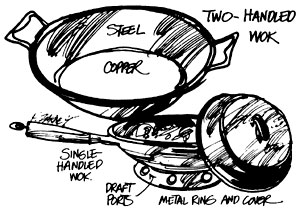
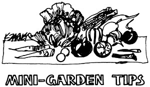
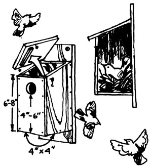

Here are a few more of THE Mother Earth News (restricted) syndicated features which have appeared in 100+ newspapers over the past three and a half years.
Now, when we're being squeezed by both a food and an energy crunch, is a good time for North Americans to discover the benefits of the Chinese wok. This simple, conical pan-you see-was specifically designed centuries ago to stretch the maximum mileage from the minimum amount of edibles and fuel. Only a little heat on its rounded bottom goes a long, long way up the sides. The Oriental practice of cutting all meat and vegetables into bite-sized pieces and quickly "stir frying" them in the utensil further insures that every bit of expended warmth cooks those edibles quickly enough to preserve almost all their fresh taste and nutritional value.
There's no need to reserve a wok only for Chinese dishes, either. As a growing number of U.S. and Canadian cooks are learning, it can easily replace several pans and become the main cooking vessel in any small city apartment or large farmhouse kitchen. It's an ideal piece of gear (much lighter than the traditional frying pan!) to pack away on camping trips too.
Jenny wrens are one of the nicest little birds to have around the backyard or homestead and many people build special small birdhouses (with an opening one inch in diameter-the size of a quarter-for house and Bewick's wrens and one and an eighth inch in diameter for the Carolina wren) to attract them. Unfortunately, a great number of these folks are disappointed when wrens refuse to occupy the houses in question. Why? Because the builders have mistakenly installed a perch at the entrance of each little home.
Wrens land directly in the entrance of their houses and have no need for a perch. Other birds (such as sparrows) which attack wrens, however, find the perches to be convenient bases from which to launch their harassment . . . and the little wrens have learned to stay away from houses that are so equipped.
|
 |
 |
 |